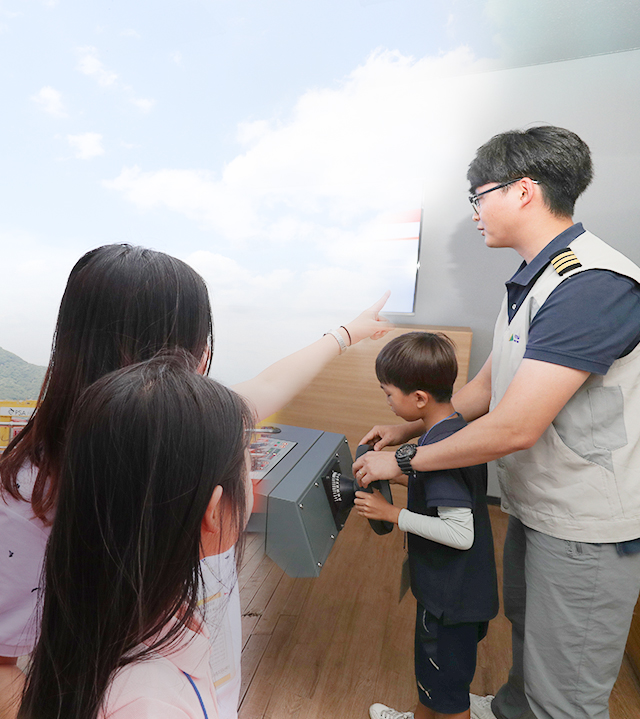
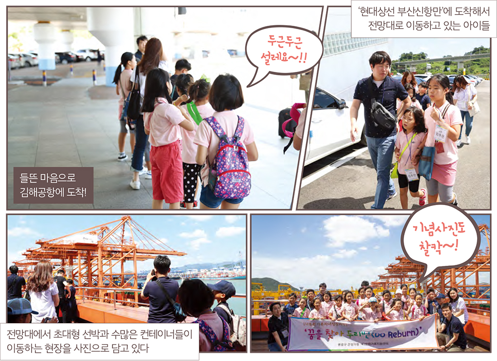
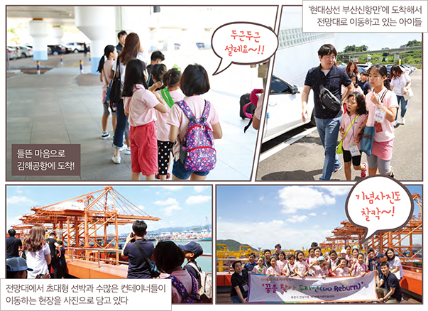
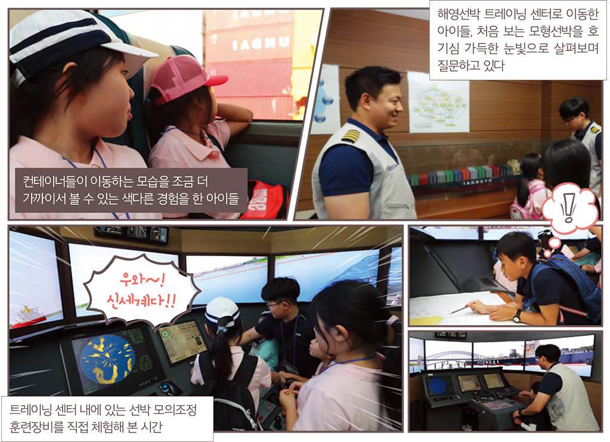
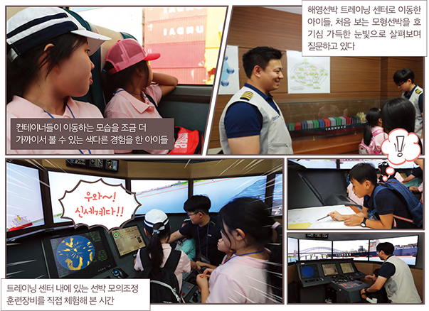

와 제 롤모델이 잡스에요!!! 아이폰 첫 출시되고 나서부터 계속 아이폰 쓰고 있는데 잡스가 너무 그리워요ㅠㅠ 지금은 돈만 벌려고 하는 것 같아서 디자인 발전도 없고ㅠㅠ와 제 롤모델이 잡스에요!!! 아이폰 첫 출시되고 나서부터 계속 아이폰 쓰고 있는데 잡스가 너무 그리워요ㅠㅠ 지금은 돈만 벌려고 하는 것 같아서 디자인 발전도 없고ㅠㅠ와 제 롤모델이 잡스에요!!! 아이폰 첫 출시되고 나서부터 계속 아이폰 쓰고 있는데 잡스가 너무 그리워요ㅠㅠ 지금은 돈만 벌려고 하는 것 같아서 디자인 발전도 없고ㅠㅠ와 제 롤모델이 잡스에요!!! 아이폰 첫 출시되고 나서부터 계속 아이폰 쓰고 있는데 잡스가 너무 그리워요ㅠㅠ 지금은 돈만 벌려고 하는 것 같아서 디자인 발전도 없고ㅠㅠ와 제 롤모델이 잡스에요!!! 아이폰 첫 출시되고 나서부터 계속 아이폰 쓰고 있는데 잡스가 너무 그리워요ㅠㅠ 지금은 돈만 벌려고 하는 것 같아서 디자인 발전도 없고ㅠㅠ
HMM 인사이드
2018 어린이 상선체험학교 개최
바다보다
큰 꿈을 키워라!
큰 꿈을 키워라!

현대상선이 지난 8월 17일 어린이 21명을 초청해
부산신항 터미널과 현대상선 해영선박 트레이닝 센터 등을 방문하는 ‘어린이 상선체험학교’를 개최했다.
어린이 상선체험학교는 바다에 관심이 많은 어린이들이 생생한 바다체험을 통해 큰 꿈을 키울 수 있도록 마련된 행사이다.
글·사진
편집실


아침 일찍 김해로 가는 비행기를 타기 위해 김포공항으로 향했다. 공항 내에서 발권을 마치고 게이트로 들어가자 귓가를 간지럽히는 아이들의 재잘거리는 목소리가 들려왔다. 그 소리에 이끌려 발걸음을 옮기자 간식을 먹으며 옹기종기 모여 있는 21명의 아이들. 초등학교 1학년생부터 6학년생까지 연령은 다양하지만, 설렘 가득한 눈빛은 누구 하나 다르지 않았다. “선생님, 비행기 타면 추락하지 않을까요? 비행기가 세상에서 제일 빨라요?” 등 쏟아진 아이들의 질문이 그저 귀엽고 사랑스럽기만 했다.
1시간 남짓 짧은 비행 후 김해에 도착했다. 혹시나 아이들이 비행기를 타고 힘들지 않았을까 했던 걱정은 기우에 불과했다. “너무 신기하고 재미있었어요!”라고 말하며 한껏 들뜬 아이들. 아이들의 밝은 기운이 전해져 덩달아 기분이 들뜨는 듯했다.


김해공항에서 다시 버스를 타고 30여 분을 달려 도착한 곳은 바로 부산신항 터미널. 도착 후 터미널 내에서 아이들을 인솔해줄 부산신항 터미널 직원을 만나 전망대로 향했다. 전망대에 오르자 초대형 선박과 수많은 컨테이너선들을 보고 연신 ‘우와~’ 하며 감탄하는 아이들은 각자 휴대폰을 꺼내 사진으로 담기 바빴다. 광활한 컨테이너 터미널을 배경으로 단체기념사진을 찍는 것도 잊지 않았다. 전망대에서 내려온 뒤, 우리는 버스를 타고 부산신항 터미널 내부로 이동하여 컨테이너들이 이동하는 모습을 조금 더 가까이서 볼 수 있는 색다른 경험도 할 수 있었다.
이후 21명의 아이들과 현대상선 해영선박 트레이닝 센터를 방문해 선박 조종을 직접 경험해볼 수 있는 시간을 가졌다. 선박 브릿지와 동일하게 구성된 장비와 대형 스크린을 통해 직접 선박을 조정해보고 경기를 펼치기도 했다. 이외에도 부산 민주공원을 방문하는 등 현대상선 자원봉사자들과 함께 뜻깊은 시간을 가졌다. 하루 동안 바다를 체험하고 서울로 돌아온 21명의 아이들이 이 시간을 통해 바다보다 더 큰 꿈을 키워 나갈 수 있길 바라본다.
-
최고예요
322
-
좋아요
322
-
슬퍼요
322
-
그저 그래요
322
-
화나요
322